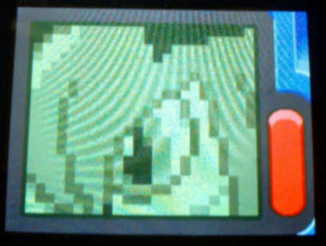
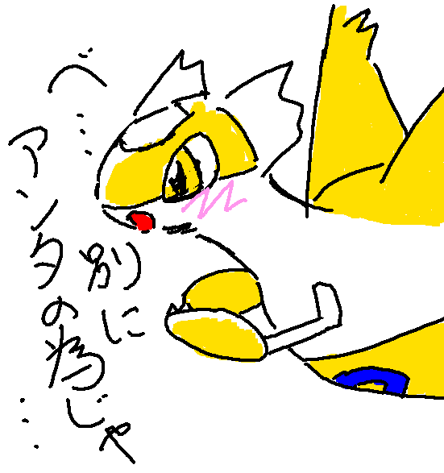
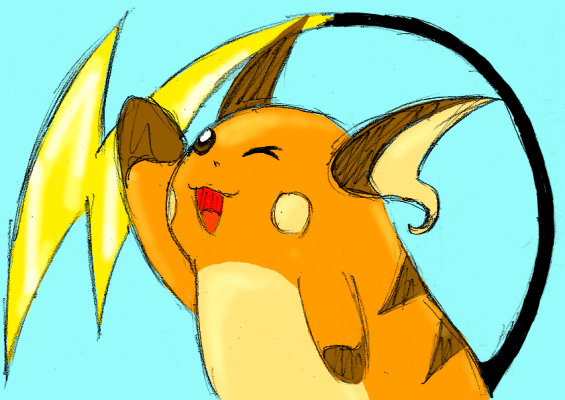
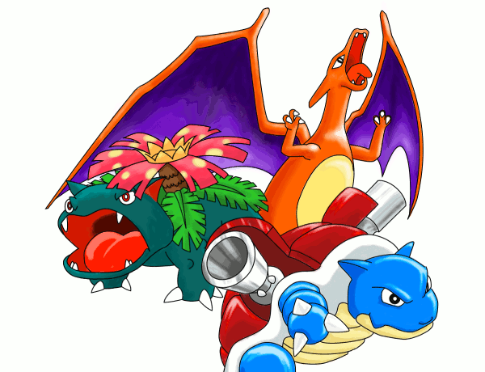
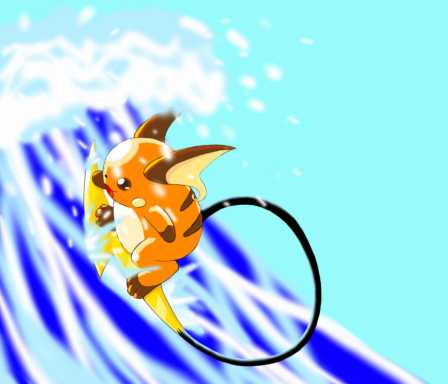
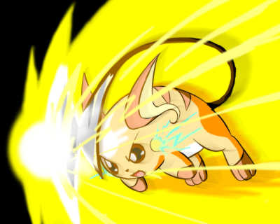

画廊。
なんとなくポケモン絵が置いてあります。
キルリア

ポケモンダイヤのドットアートアプリにて。
ツンデレラティアス

チャットにて
＞色違いラティアス捕まえた!
＞けど性格が意地っ張りorz…
＞いや、これはツンデレと考えれば
って言ってた人がいたんで描いてみた。
「な…何にやけてんのよ! 別にアンタのために光ってるんじゃないんだから!」
ライチュウ

ただなんとなくライチュウ。
移転前最終日に旧URLに飾っておいたのだが気付いた人はいるだろうか。
初代御三家

10周年記念に描いてみた。やっぱりポケモンといえばこいつらですよね。
ちなみにファイル名を見れば分かるのだが実は描き途中。
ここからソーラービーム・ハイドロポンプ・火炎放射を描き加えるつもりでいたが力尽きる。
波ライ

(クリックで拡大)
夏なんで波乗りライチュウ。
アイアンボルテッカー

(クリックで拡大)
ボルテッカーからのアイアンテールはライチュウが使ってほしかった。